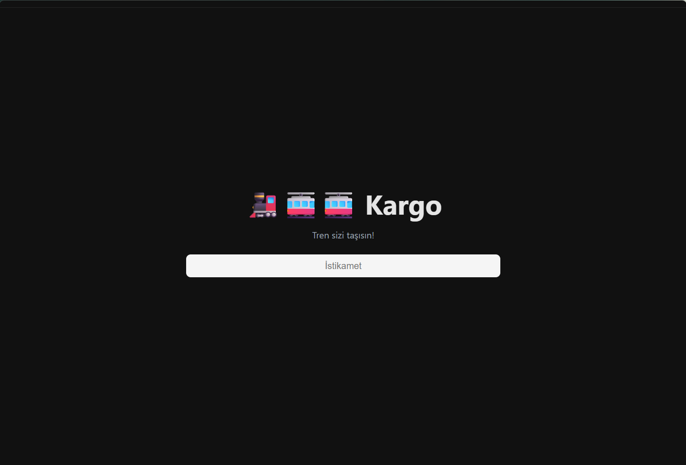

Kullanıcı arayüzü neredeyse hiç olmayan bir tarayıcının Türkçe versiyonu.
Şimdi İndir
Kargo, internette yaşayan ve fareden nefret eden insanlar için tasarlanmış bir tarayıcıdır. Kargo, sadece birkaç klavye kısayolu kullanılarak kontrol edilebilir. Kargo, bir tarayıcının sadece en kullanışlı özelliklerini içerir; bu sayede internette gezinirken gereksiz özellikler sizi rahatsız edemez. Kargo'yu geliştirdim çünkü tercih ettiğim tarayıcıların (Chrome ve Firefox) sahip olduğu çoğu özelliği kullanmıyordum.
Kargo; Javascript, HTML ve CSS kullanarak modern, platformlar arası masaüstü uygulamaları geliştirmeye yarayan bir teknoloji olan Electron kullanılarak inşa edilmiştir. Kaynak koduna Github üzerinden ulaşılabilir.
| Ctrl + T | Yeni sekme aç |
| Ctrl + X | Mevcut sekmeyi kapat |
| Ctrl + Shift + T | Sekme çubuğunu göster/gizle |
| Ctrl + Shift + ← | Önceki sekme |
| Ctrl + Shift + → | Sonraki sekme |
| Ctrl + ← | Geri git |
| Ctrl + → | İleri git |
| Ctrl + Shift + H | Ana sayfaya git |
| Ctrl + Shift + S | Ayarlar sayfasını aç |
| Ctrl + Shift + A | Hakkında sayfasını aç |
| Ctrl + R / F5 | Sayfayı yenile |